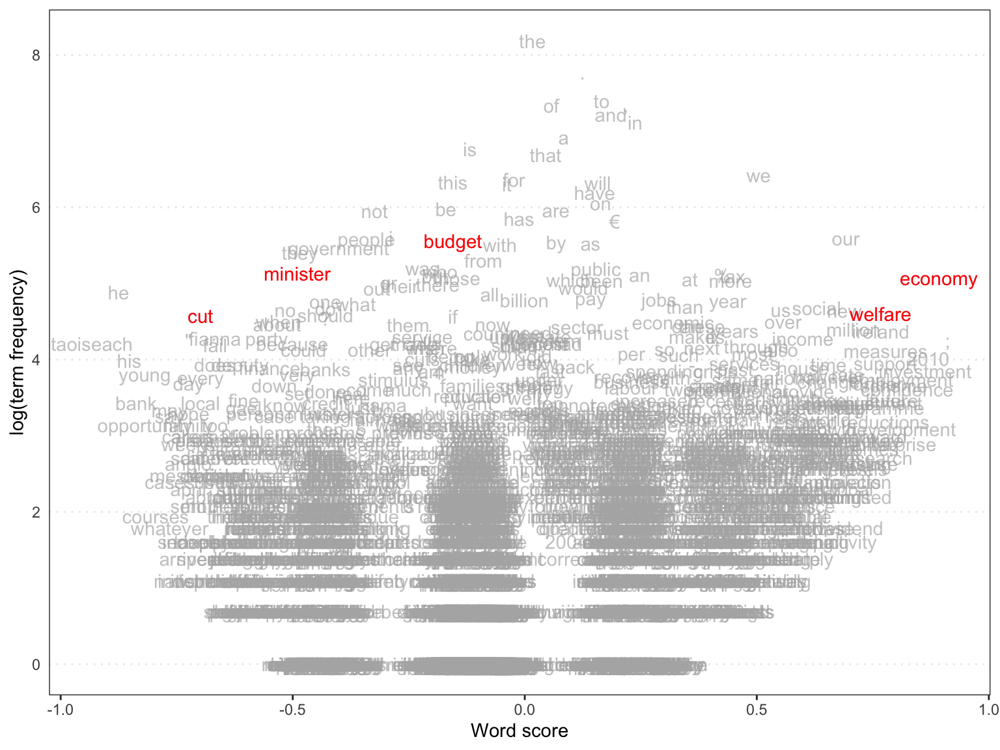
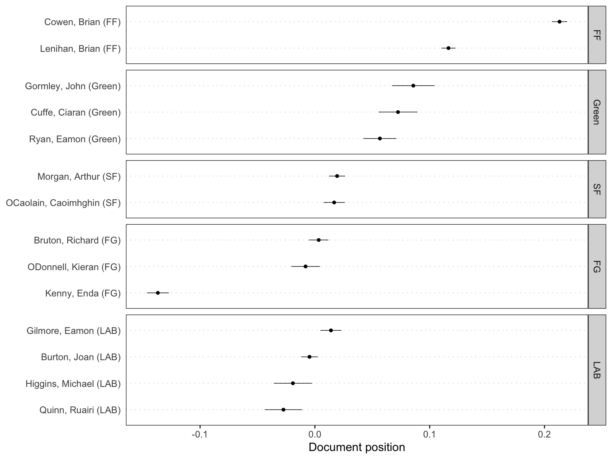
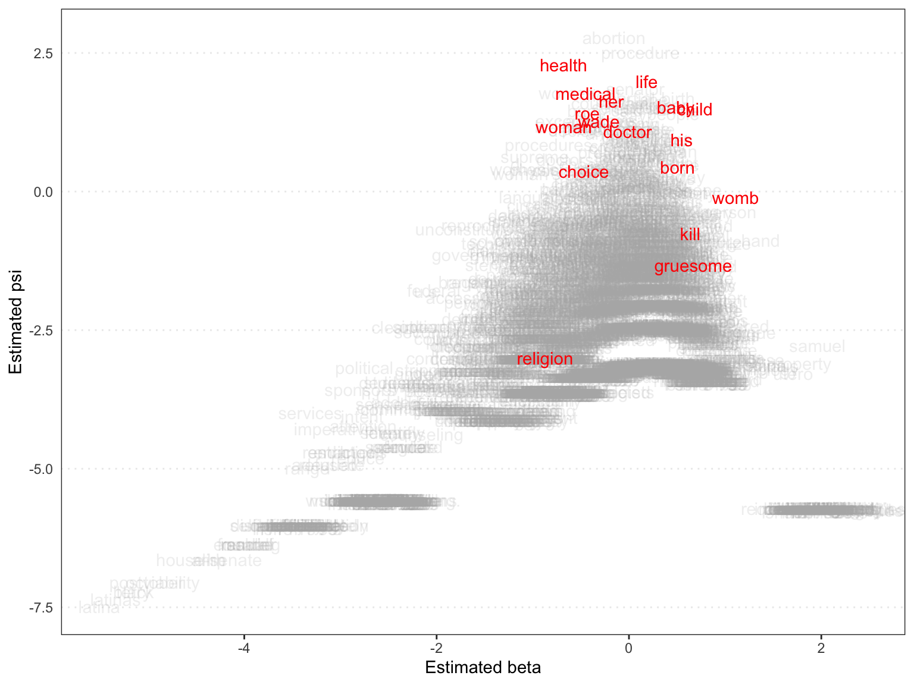
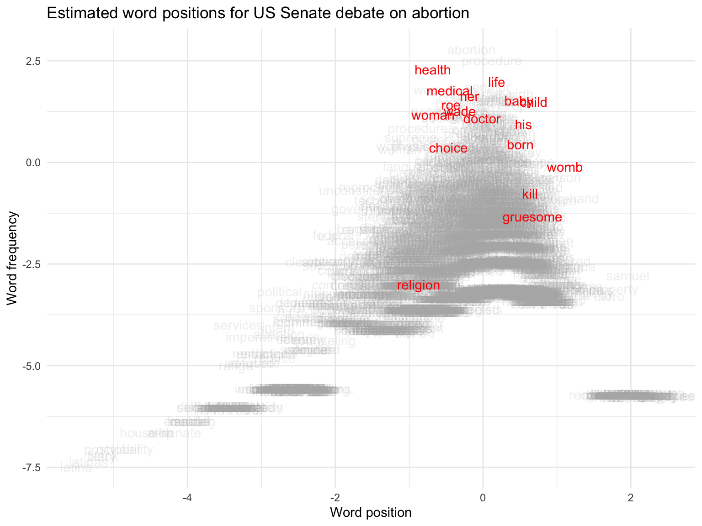

Text as Data: Week 9
Matthias Haber
10 November 2021
Goals for Today
Goals
- Scaling Models with Wordscores
- Scaling Models with Wordfish
Wordscores
Wordscores
Wordscores compares the word frequencies of texts at hand to the word frequencies of so called reference texts with known (or assumed) positions and assigns document scores based on the similarity of these references.
- Highly automated, (nearly) no language knowledge needed
Wordscores concept
The idea
Each word has a policy position (word score)
Some reference document positions are known
Document positions are average of its words’ positions
1st step: Derive wordscores from reference texts
2nd step: Apply wordscores to virgin texts
Wordscores: illustrative example
- Consider two reference texts A and B
- The word “choice” is used 10 times per 10,000 words in text A and 30 times per 10,000 words in text B
- Conditional on observing the “choice”, we are reading text A with probability 0.25 and text B with 0.75
- We can compute a “word score” once we assign reference values to the reference texts
- Suppose reference text A has position -1, and text B position +1
- then the score of word “choice” is:
- \(0.25(-1.0)+0.75(1.0)=-0.25+0.75=0.5\)
Wordscores Procedure

Wordscores Procedure

Wordscores Procedure

Estimating Policy Positions from Political Texts
Laver & Garry
Goal: Generating party positions for British and Irish manifestos
Coding scheme similar to the CMP’s
- More hierachical, larger number of categories
- Each category has a pro-, con- and neutral variant
Estimating Policy Positions from Political Texts
Assumptions:
- Manifesto content is related to party policy positions
- Word usage is realted to policy positions
- Word usage is contant over time
- All relevant words are coverered in the reference texts
Estimating Policy Positions from Political Texts
1st step: Training set
Manifestos of Labour and Cons (UK) in 1992
- Pool of ‘keywords’
- \(N_{L} \geq 2N_{R}=>\) Dictionary element left
- \(N_{R} \geq 2N_{L}=>\) Dictionary element right
Allocate selected words to the coding scheme’s categories
Estimating Policy Positions from Political Texts
2nd step: Count occurence of elements in the dictionary in manifestos
Britain (1992 & 1997)
Ireland (1992 & 1997)
Left-right-scaling: \(\frac{R-L}{R+L}\)
- \(Econ_{LR}\)
- \(Soc_{LR}\)
Estimating Policy Positions from Political Texts
Test-Set: Crossvalidation
- Expert Surveys
- CMP Coding/Revised CMP Coding

Wordscores and Dictionaries
Conceptually, the two steps do the same in both approaches:
- 1st step derives a position of a word from texts with known properties
- 2nd step weighs the words in the unknown texts with this information
Information in dictionary is often binary, wordscores in wordscore are scale
Selecting reference texts
- Reference texts should use the same vocabulary in the same context
- Reference texts need to span the full dimension
- Set of reference text should contain as many words as possible
- Estimates of the positions (reference scores) need to be well grounded and/or very conservative
1st step - Obtaining wordscores
Start out from the observed word frequencies in reference texts:
\(F_{wr}\): Relative frequency of word \(w\) in reference-text \(r\)
Conditional probabilities: Given we are observing word \(w\), what is the probability that we are reading text \(r\)?
\(P_{wr} = \frac{F_{wr}}{\sum{_r}F_{wr}}\)
\(S_{w} = \sum{_r}(P_{wr}*A_{r})\)
- \(A_{r}\) is the a priori score for reference text r
- \(S_{w}\) is the actual wordscore for word w
2nd step – Applying the wordscores
\(S_{v} = \sum{_w}(F_{wv}*S_w)\)
- \(F_{wv}\) is analogous to \(F_{wr}\)
- \(S_v\) is the weighted mean score of the words in text \(v\)
Variance is the basis for calculating uncertainty
- Summary for the consensus of the scores of each word in the virgin text
- Higher consensus -> lower variance -> less uncertainty
Wordscores – Practical considerations
What about scaling things other than manifestos?
E.g. speeches:
- Use reference texts from other context (e.g. manifesto)?
- What scores to use?
- Length of the reference texts?
Comparing wordscores and CMP
- Laver, Garry & Benoit use Irish and British manifestos to demonstrate/validate
- CMP data offers information for many countries and over long periods
- How do wordscores results compare across countries?
Comparing wordscores and CMP
- Bräuninger, Debus & Müller (2013) compare wordscores results for 13 countries between 1980 and 2000
- Reference texts are the manifestos in the latest elections
- Reference scores are the Rile scores from CMP
- Essentially ‘replicate’ CMP scores using wordscores
Comparing wordscores and CMP

Comparing wordscores and CMP

Comparing wordscores and CMP
Wordscores replicates CMP better whew
- reference texts cover the full range of a dimension
- the percentage of scored words is high
Cross-check results from wordscores before using them in an analysis
Wordscores exercise: Load data and create corpus
In the wordscores exercise we’ll be looking at annual budget speeches held in the Irish Parliament from 2008 - 2012. Let’s load the data, tokenize it and create a dfm.
Wordscores exercise: Load data and create corpus
As we just learned wordscores requires us to assign a set of known scores to so called reference texts to identify the positions of new documents. Let’s create some reference scores for the 5th and 6th document.
Wordscores exercise: Predict word positions
We can use the textmodel_wordscores() function from the quanteda.textmodels package to estimate the document positions based on the positions of the reference texts.
## when i presented the supplementary
## -0.53014011 -0.28805749 -0.42939762 0.01670114 -0.42939762
## budget
## -0.15483456Wordscores exercise: Plot word positions
We can use the textplot_scale1d() function from the quanteda.textplots package to plot word positions.
Wordscores exercise: Plot word positions

Wordscores exercise: Predict document positions
We can extract the estimated speaker positions using the precict() function as if this were a regular fitted regression model.
## $fit
## fit lwr upr
## Lenihan, Brian (FF) 0.116362873 0.110173633 0.122552114
## Bruton, Richard (FG) 0.003318195 -0.005228996 0.011865387
## Burton, Joan (LAB) -0.004696791 -0.011996402 0.002602821
## Morgan, Arthur (SF) 0.019334198 0.012308623 0.026359774
## Cowen, Brian (FF) 0.213090960 0.206424497 0.219757423
## Kenny, Enda (FG) -0.136776116 -0.146311207 -0.127241025
## ODonnell, Kieran (FG) -0.008132150 -0.020643605 0.004379306
## Gilmore, Eamon (LAB) 0.013988095 0.004862201 0.023113990
## Higgins, Michael (LAB) -0.019145477 -0.035788594 -0.002502360
## Quinn, Ruairi (LAB) -0.027387712 -0.043704917 -0.011070506
## Gormley, John (Green) 0.085698169 0.067187907 0.104208431
## Ryan, Eamon (Green) 0.056610204 0.042201917 0.071018490
## Cuffe, Ciaran (Green) 0.072391730 0.055483988 0.089299472
## OCaolain, Caoimhghin (SF) 0.016769698 0.007557775 0.025981621Wordscores exercise: Plot speaker positions
And then plot the results using the same textplot_scale1d() function and grouping by party.
Wordscores exercise: Plot speaker positions

Wordfish
Wordscores vs. Wordfish
Wordscores derives and ‘transfers’ known properties of words, i.e. the wordscores between texts.
Wordfish builds a statistical model that explains the occurence of each word: Poisson regression
Wordscores vs. Wordfish
Advantages from a practical perspective
- No reference texts needed; Anchor points instead
- Statistically models all words in a text
- Absolute minimum of input from the user; Versatile and well suited for smaller projects
The statistical model replaces the need for reference texts
- Mathematical complexity of the model
Poisson model
Dependent variables of interest may be counts, e.g.
- Occurence of conflict/wars, casualties in conflicts; Number of bills brought forward in a term; Number of hospitalizations, sicknesses etc.
- Word count in a document
A dependent count variable \(\gamma\)
- bound between 0 and \(\infty\)
- takes only discrete values (0,1,2,3,…)
Poisson model
Poisson distribution
\[\gamma_i = Possion(\lambda_i)\]
- Poisson distribution: Repeated Bernoulli-Experiments (0/1)
- Generally used in count data (poisson regression)
- Has only one parameter: ‘Event occurrence rate’
- No contagion effects; the event rate remains constant
Wordfish model
\[\gamma_{ij} \sim Poisson(\lambda_{ij})\] \[\lambda_{ij} = exp(\alpha_i + \psi_j + \beta_j * \omega_i)\]
\(i\) = document (e.g. party manifesto)
\(j\) = unique word
\(\alpha_i\) = document fixed effect
\(\psi_j\) = word fixed effect
\(\beta_j\) = word specific weight (sign representing the ideological direction)
\(\omega_i\) = document position
Wordfish estimation
Regression without independent variables
- Solution: Maximum Likelihood Estimation
Estimate party parameters conditional on the expectation for the word parameters (in first iteration the starting values)
Estimate word parameters conditional on party parameters obtained in previous step
Go back and forth until a convergence criterion is met and the likelihoods do not change anymore
Wordfish estimation
Likelihood function
\[\sum^m_j \sum^n_i - exp(\alpha_i + \psi_j + \beta_j * \omega_i) + ln(exp(\alpha_{it} + \psi_j + \beta_j * \omega_i)) * \gamma_{ij} \]
Without fixing some parameters, there are infinite combinations of \(\omega\) and \(\beta\), which could provide the same likelihood.
Document positions: mean of all positions \(\omega\) across all elections is set to 0, and standard deviation to 1.
Set directionality (e.g. document A always has a smaller valuer than document B).
Set document fixed effect: first document \(\alpha\) is set to 0.
Wordfish estimation
This means that you cannot directly compare estimates ACROSS different estimations (for example, in secondary analysis). This is the case for ALL scaling models (e.g. Nominate), and also for Wordscores.
Think to what extent position estimates are actually comparable…
- … across countries
- … over time
- … between documents
Wordfish estimation
Dimension of the scaling is created ex post (as compared to Wordscores)
- What is the dimension identified?
- More validation required
- Creation of alternative dimensions via subsetting texts only
Wordfish output

Wordfish output

Wordfish: Multilingual?
Does it work in different languages? What are some reasons for doubting it?
- Ideal case: get the exact same political texts in high quality translations
- Estimate Wordfish and compare across different languages
- This is possible: European Parliament speeches (translated into all official languages)
Wordfish: Speeches in EU Parliament

(In)stability of the political lexicon
What if the political lexicon is unstable over time?
- New issues appear, old issues disappear
If this happens frequently, then scaling algorithms will pick up shifts in the policy agenda – rather than shifts in party positions.
In fact, this is one assumption: that word usage reflects ideology.
- For example, it becomes seriously problematic when all parties start talking about the “issue” of the day. Then we can distinguish between elections, but not very well between parties
Policy dimensionality
In the original Wordscores article, the authors assumed the policy dimensions can be chosen by using different reference scores from known policy scales (expert surveys)
- “Economic policy” and a “social policy” for the UK in 1997
- Reference texts: 3 manifestos from 1992 (same for BOTH dimensions)
| Reference Scores | Lib Dems | Labour | Cons. |
|---|---|---|---|
| Economic Policy | 8.21 | 5.35 | 17.21 |
| Social Policy | 6.87 | 6.53 | 15.34 |
Policy dimensionality
This means that estimates across dimensions vary only because different expert evaluations are used to anchor the texts, not because the text input varies according to the policy area of interest
- This is not a necessary assumption. There is no reason why one cannot run analysis of sort of a policy dictionary.
- One possibility is to preserve as much of the context as possible and parse the sections of manifestos into policy areas and then estimate positions on those sections only (Proksch and Slapin 2006, Slapin and Proksch 2008)
Wordfish Exercise: Load data
We will take a look at the US Senate debate on partial birth abortion.
First let’s load the data into R and take a look at the corpus:
## Corpus consisting of 23 documents, showing 23 documents:
##
## Text Types Tokens Sentences party speaker
## ALLARD 400 1165 53 R ALLARD
## BOND 129 232 9 R BOND
## BOXER 2231 18527 886 D BOXER
## BROWNBACK 646 2884 168 R BROWNBACK
## BUNNING 281 593 32 R BUNNING
## CANTWELL 395 1114 55 D CANTWELL
## DeWINE 463 1438 75 R DeWINE
## DOMENICI 203 479 27 R DOMENICI
## DURBIN 520 1874 89 D DURBIN
## ENSIGN 410 1235 66 R ENSIGN
## FEINGOLD 213 414 19 D FEINGOLD
## FEINSTEIN 1348 6112 284 D FEINSTEIN
## FRIST 222 501 25 R FRIST
## HARKIN 655 2612 145 D HARKIN
## HATCH 451 1173 60 R HATCH
## LAUTENBERG 678 2131 123 D LAUTENBERG
## MIKULSKI 260 631 42 D MIKULSKI
## NELSO 155 328 17 D NELSO
## NICKLES 280 568 26 R NICKLES
## REID 38 59 4 D REID
## SANTORUM 1593 10507 458 R SANTORUM
## SESSIONS 653 2174 111 R SESSIONS
## VOINOVICH 186 363 19 R VOINOVICHWordfish Exercise: Tokenize and dfm
Now we’ll tokenize the text and create a document term matrix.
Wordfish Exercise: Run the wordfish model
Let’s run the one-dimensional scaling model known as wordfish using the textmodel_wordfish function from the quanteda.textmodels package.
We use the dir argument to set the polar opposites of the scale. In this case we assume that that the 3rd speaker Barbara Boxer, is to the left of the 21st speaker Rick Santorum.
Wordfish Exercise: Investigate the output
Let’s take a look at the components of the fitted model.
## [1] "documents" "features"## theta alpha
## ALLARD 0.02165274 0.21348639
## BOND -0.08693357 -1.29227632
## BOXER -1.05777079 2.76206193
## BROWNBACK 2.38269597 0.12975044
## BUNNING 0.81776695 -0.48868033
## CANTWELL -1.25634814 -0.07911048## beta psi
## mr 0.06468449 0.8700898
## president 0.05462191 1.5038171
## commend -0.02595502 -2.0448676
## senator 0.06740927 1.8584309
## pennsylvania -0.13413832 -0.6192956
## santorum 0.12538330 -0.4688482Wordfish Exercise: Investigate the output
## beta psi
## mr 0.06468449 0.8700898
## president 0.05462191 1.5038171
## commend -0.02595502 -2.0448676
## senator 0.06740927 1.8584309
## pennsylvania -0.13413832 -0.6192956
## santorum 0.12538330 -0.4688482Wordfish Exercise: Estimate speaker positions
We can extract the estimated speaker positions using the precict() function just as with wordscores.
## $fit
## fit lwr upr
## ALLARD 0.02165274 -0.10190180 0.1452073
## BOND -0.08693357 -0.34076934 0.1669022
## BOXER -1.05777079 -1.07929641 -1.0362452
## BROWNBACK 2.38269597 2.28117382 2.4842181
## BUNNING 0.81776695 0.62356627 1.0119676
## CANTWELL -1.25634814 -1.33174776 -1.1809485
## DeWINE 1.38728909 1.25204737 1.5225308
## DOMENICI 0.32865152 0.12357508 0.5337280
## DURBIN -0.25969664 -0.35154658 -0.1678467
## ENSIGN 0.83658945 0.68738863 0.9857903
## FEINGOLD -1.20437761 -1.32919832 -1.0795569
## FEINSTEIN -1.59354288 -1.61938317 -1.5677026
## FRIST 0.83880779 0.61988997 1.0577256
## HARKIN -0.79094571 -0.85650252 -0.7253889
## HATCH 0.97739715 0.83244576 1.1223485
## LAUTENBERG -0.65712119 -0.73253786 -0.5817045
## MIKULSKI -1.22625771 -1.32530022 -1.1272152
## NELSO -1.10229306 -1.25803199 -0.9465541
## NICKLES 0.13603646 -0.03471560 0.3067885
## REID 0.20834388 -0.33636489 0.7530527
## SANTORUM 0.48881739 0.44242432 0.5352105
## SESSIONS 0.62231611 0.52012750 0.7245047
## VOINOVICH 0.18892279 -0.03352536 0.4113709Wordfish Exercise: Create a nice data frame
If we want to we can extract the estimated speaker positions into a data frame and merge in the docvars.
speaker_pos <- data.frame(preds$fit,
speaker = row.names(preds$fit)) %>%
dplyr::left_join(docvars(senate_dfm)) %>%
dplyr::arrange(fit)
head(speaker_pos)## fit lwr upr speaker party
## 1 -1.593543 -1.619383 -1.5677026 FEINSTEIN D
## 2 -1.256348 -1.331748 -1.1809485 CANTWELL D
## 3 -1.226258 -1.325300 -1.1272152 MIKULSKI D
## 4 -1.204378 -1.329198 -1.0795569 FEINGOLD D
## 5 -1.102293 -1.258032 -0.9465541 NELSO D
## 6 -1.057771 -1.079296 -1.0362452 BOXER DWordfish Exercise: Let’s plot the speaker positions
We can use the textplot_scale1d() function from the quanteda.textplots package to plot speaker positions.
Wordfish Exercise: Let’s plot the speaker positions

Wordfish Exercise: Let’s plot the word positions
Similarly, we can use the same function to plot the estimated positions of each word.
Wordfish Exercise: Let’s plot the word positions

Wordfish Exercise: Let’s plot the word positions
We can also use our ggplot syntax to make the plot a bit nicer.
textplot_scale1d(wf, margin = "features", alpha = 0.2,
highlighted = c("life", "choice", "womb", "her", "woman", "health",
"born", "baby", "gruesome", "kill", "roe", "wade",
"medical", "her", "his", "child", "religion","doctor"),
highlighted_color = "red") +
labs(x = "Word position", y = "Word frequency") +
ggtitle("Estimated word positions for use senate debate on abortion") +
theme_minimal()Wordfish Exercise: Let’s plot the word positions

Homework
Create a corpus from a number of documents of your own choosing and use either the wordscores or the wordfish approach to estimate the document positions. Plot your results and share them in class next week.
Wrapping up
Questions?
Outlook for our next session
Next week we will look at different ways of generating topics from text.
That’s it for today
Thanks for your attention!